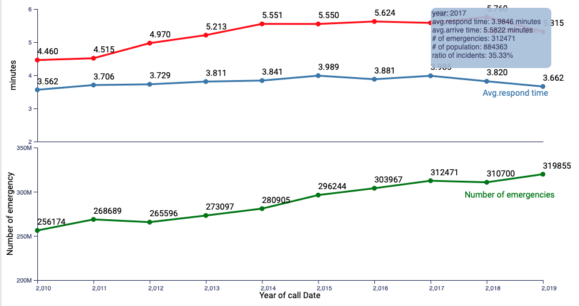

Prototype
The averge response time and arrive time for emergencies 2010-2019
by Kate Luo, Mar 2, 2020
Interactive struction
ToolTips(infotip): in this line chart, I create a graphical user interface element: tooltip. When you hovers over an item, without clicking t, and a tooplip which including the year of call data, the averge of respond time, the averge of arrive time and total number of emergencies will appear.
In the toolTips, you can see the ratio of incidents and population, which can give you more sense from respond time. The ratio increase about 5%, but the respond time don't have any increase.

D3 implementations(ToolTips)
Interactive Instruction
Brush & Zoom: in this line chart, I create a graphical user interface element: Brush & Zoom. Converted the Brush & Zoom area chart block to work with line charts and combining d3-brush and d3-zoom to implement focus + context.